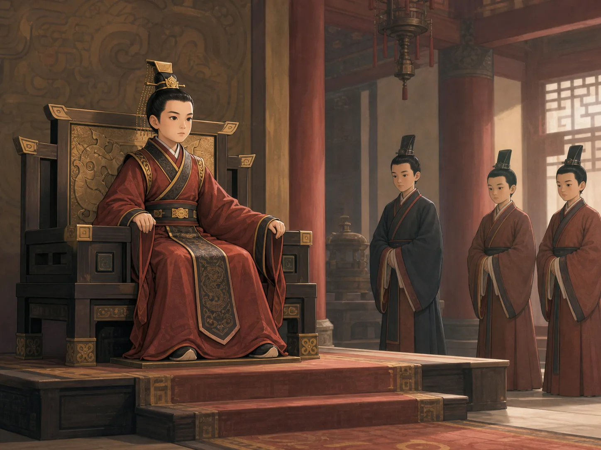
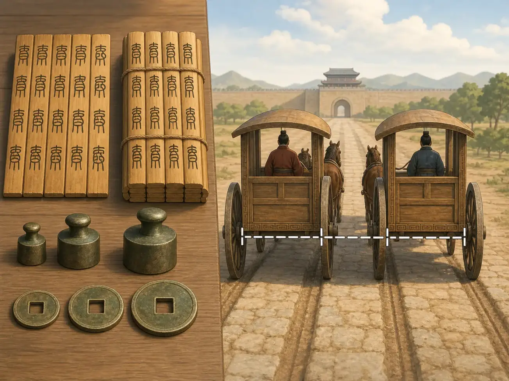
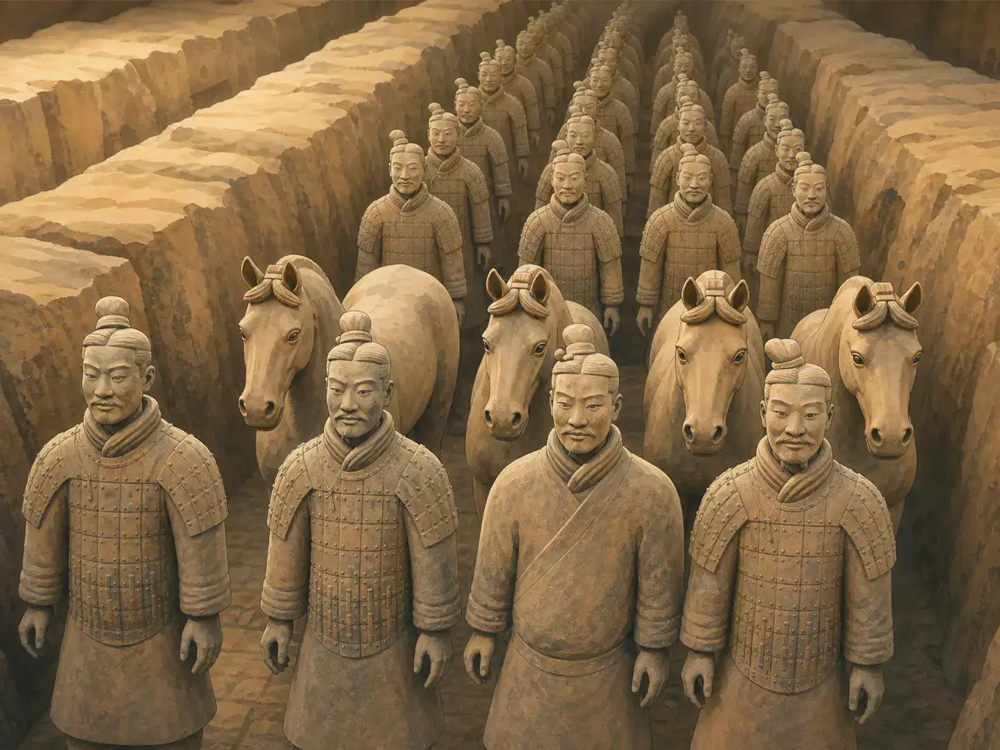

秦始皇的统一：道路变通了，谁付出了代价？
Qin Shi Huang's Unification: What Did It Build, and What Did It Cost?
阅读难度 · 困难Reading level · Hard
Page 1
十三岁的秦王，不是从零开始
A Thirteen-Year-Old King Who Did Not Start from Nothing

This is a modern imagined scene of a young king, not a portrait of Ying Zheng or a record of his accession. No contemporary image confirms the face, crown, clothing, palace, or attendants.
公元前247年，十三岁的嬴政继承秦国王位。这个画面很容易被讲成“一个少年忽然决定统一天下”，可历史没有那么简单。秦国几代君主早已改革税收和军政、夺取土地、设置郡县；嬴政即位时，秦已经是战国最强的国家之一。年少时国事由大臣处理，直到公元前238年前后，他才亲自掌握大权。
从公元前230年到前221年，秦军先后灭韩、赵、魏、楚、燕、齐。战争结束了七个强国长期争雄的局面，却也包含围城、杀戮、迁徙和失败者失去家园。前221年，嬴政不愿再沿用“王”的称号。他把古老称号中的“皇”和“帝”组合起来，自称“始皇帝”，意思是第一位皇帝。后人通常叫他秦始皇。
我们关于他的长篇故事，大多来自司马迁在秦始皇死后约一个世纪写成的《史记》。秦代诏版、刻石、简牍和考古遗址离他的时代更近，却不会告诉我们每一句对话。因此读秦始皇，要随时问：这是秦代留下的证据，是司马迁的较晚叙述，还是更晚的传说？
In 247 BCE, thirteen-year-old Ying Zheng inherited the throne of Qin. It is tempting to turn this into a story about a boy who suddenly decided to unite the world. History was more complicated. For generations, Qin rulers had changed taxation, government, and the army, seized territory, and organized land into commanderies and counties. By the time Ying Zheng became king, Qin was already one of the strongest states of the Warring States era. Senior officials handled government while he was young; he took personal control around 238 BCE.
From 230 to 221 BCE, Qin armies conquered Han, Zhao, Wei, Chu, Yan, and Qi. The victories ended the long struggle among seven powerful states, but conquest also meant sieges, killing, forced movement, and lost homes. In 221 BCE, Ying Zheng decided that “king” was no longer a grand enough title. He combined the ancient words huang and di and called himself Shi Huangdi - the First Emperor. Today he is usually called Qin Shi Huang.
Most long stories about him come from Sima Qian's Records of the Grand Historian, written roughly a century after the emperor's death. Qin edict plates, stone inscriptions, wooden and bamboo documents, and archaeological sites are closer to his lifetime, but they do not preserve every conversation. As we read, we should keep asking: Is this evidence from Qin times, Sima Qian's later account, or a still later legend?
Page 2
统一标准，不是按下一只开关
Standardization Was Not a Switch Flipped Overnight

This is a modern concept image, not a collection of photographed Qin objects. Its writing, coin sizes, weights, gate, road, and wheel tracks symbolize standardization and are not an archaeological reconstruction.
假设一名商人从原来的赵国走到原来的秦国：同一个字可能有不同写法，一枚旧钱未必到处都收，同一名称的量器也未必容量相同。秦并没有发明文字、钱币、秤和道路；各国早已使用这些工具，秦国自己也在统一前发展过制度。帝国做的新事情，是把秦的规范大规模推到新征服的地区。
朝廷推行统一的文字写法、货币、长度、容量和重量标准，并扩展道路与驿传网络。“书同文”并不表示人人突然说同一种语言，也不表示一天之内所有旧字形消失；出土文书显示，实际书写仍有变化。“车同轨”也不只是一条神奇的固定车辙，而是让车辆、道路和行政运输更容易配合的政策理想。
统一标准确实能让命令、税粮、军需和交易跨越旧国界。可是“方便”也要追问是谁的方便：农民必须按同一套办法登记、纳税和服役；地方官更容易统计家庭、征集粮食、调动士兵。连接帝国的道路既能运货，也能更快运军队。统一带来共同规则，同时把中央权力伸进了更多人的日常生活。
Imagine a merchant traveling from the former state of Zhao into the former state of Qin. The same character might have different written forms. An old coin might not be accepted everywhere, and measures with the same name might not hold the same amount. Qin did not invent writing, coins, scales, or roads. The different states had long used them, and Qin had developed its own systems before unification. What the empire did was spread Qin standards across the newly conquered lands on a vast scale.
The court promoted common forms of writing, currency, length, capacity, and weight, while expanding roads and relay stations. “Writing alike” did not mean that everyone suddenly spoke one language or that every older written form vanished in a day; excavated documents still show variation in actual handwriting. “Carriages on the same track” was not simply one magical rut of a fixed width. It expressed a policy of making vehicles, roads, and government transport work together more easily.
Shared standards could help orders, tax grain, military supplies, and trade cross old borders. But whenever something became “easier,” we should ask: easier for whom? Farmers had to be registered, taxed, and called to service under one system. Officials could count households, collect grain, and move soldiers more efficiently. Roads carried goods, but they also carried armies. Unification created common rules while extending central power deeper into everyday life.
Page 3
一张地图里藏着匕首吗？
Was There Really a Dagger Inside a Map?
在秦统一以前，燕国太子丹派荆轲刺杀秦王。按照《史记·刺客列传》的精彩叙述，公元前227年，荆轲带着燕国地图进入秦宫。地图展开到尽头，藏着的匕首露了出来。他抓住秦王衣袖刺去，秦王挣脱，匆忙绕柱躲避，最后在侍医夏无且等人的帮助下反击成功。
这段故事像一场动作电影，还有人物神色、连续动作和直接对话。《史记》甚至说明，司马迁听到的细节经过知情者的朋友转述。这给叙述提供了一条来源线索，却不等于现场录像。刺杀行动及主要人物有早期文献依据；每句话、每一个转身和“绕柱”的具体画面则不能逐帧验证。
故事也提醒我们，统一不是一场所有人都欢迎的和平会议。对秦王来说，六国是等待结束的战争；对燕太子和许多旧国人来说，秦军是正在逼近的征服者。刺杀失败后，秦继续进军，燕国最终灭亡。同一件“统一”，从胜利者和被征服者的位置看，会有很不一样的形状。
Before Qin completed its conquests, Crown Prince Dan of Yan sent Jing Ke to assassinate the king of Qin. In the dramatic account in Sima Qian's “Biographies of the Assassins,” Jing Ke entered the Qin palace in 227 BCE carrying a map of Yan territory. When the map was unrolled to its end, a hidden dagger appeared. Jing Ke grabbed the king's sleeve and struck. The king tore free, fled in confusion, and eventually fought back with help from the court physician Xia Wuju and others.
The episode reads like an action movie, complete with facial expressions, quick movements, and direct speech. The Records even explains that details reached Sima Qian through friends of people said to know the event. That gives the story a chain of transmission, not a video recording. Early texts support the assassination attempt and its central figures, but we cannot verify every sentence, turn, or chase around a pillar frame by frame.
The story also reminds us that unification was not a peaceful meeting welcomed by everyone. To the Qin king, the six states were wars waiting to be ended. To the crown prince of Yan and many people in the older states, Qin's armies were approaching conquerors. After the attempt failed, Qin kept advancing and eventually destroyed Yan. The same “unification” looks very different from the position of the victor and the conquered.
Page 4
城墙连起来，劳役也压下来
Walls Were Joined - and Labor Demands Fell Hard
北方的长城也不是秦始皇从地面上突然造出的一条完整巨龙。战国时期，秦、赵、燕等国已经修筑不同方向、不同用途的墙。统一以后，秦派蒙恬北击匈奴，又连接、修整或增筑一些旧墙，形成北方防线的一部分。今天游客常见的砖石长城大多属于很晚的明代，不能当作秦墙原貌。
道路、宫殿、陵墓和边墙都需要测量、烧制材料、运输粮食，也需要大量双手。服役者包括被征发的百姓、士兵、囚徒和被迁徙的人。古书记下极大的劳工数字，却没有完整名册让我们精确计算；现代研究仍能确定，秦朝动员人力与粮食的规模非常沉重。工程可能加强交通与防御，也让家庭失去劳力，让许多人在远方承担危险工作。
后来著名的孟姜女哭长城故事，经过许多世纪才逐渐与秦长城、秦始皇联系起来。它不是秦代工地的实录，却保存了一种真实而长久的追问：宏伟建筑值得赞叹时，那些搬土、离家甚至死去的人在哪里？工程的成果和人的代价，不能只挑一边讲。
The northern walls did not suddenly rise from the ground as one complete stone dragon under Qin Shi Huang. During the Warring States era, Qin, Zhao, Yan, and other states had already built walls in different places for different purposes. After unification, Qin sent the general Meng Tian north against the Xiongnu and connected, repaired, or extended some earlier walls as part of a northern defense line. Most of the brick-and-stone Great Wall visited today dates from the much later Ming dynasty and does not show us exactly what a Qin wall looked like.
Roads, palaces, the mausoleum, and frontier walls all required surveying, making materials, carrying food, and an enormous number of working hands. Those put to work included conscripted commoners, soldiers, convicts, and relocated people. Ancient texts give huge labor totals, but no complete worker lists survive for us to count. Modern research still makes clear that Qin demands for labor and grain were extremely heavy. Projects could strengthen transport and defense while also taking workers away from families and sending many people into dangerous conditions far from home.
The famous tale of Lady Meng Jiang crying at the Great Wall became connected with the Qin wall and Qin Shi Huang only after centuries of retelling. It is not a Qin construction report. Yet it preserves a real and lasting question: When we admire a monumental structure, where are the people who hauled earth, left home, or died? We should not tell only the achievement or only the cost.
Page 5
“焚书坑儒”其实包含两件事
“Burning Books and Burying Scholars” Combines Two Events
公元前213年，按照《史记》的记载，丞相李斯反对学者用古代制度批评当朝，建议收缴并焚烧民间收藏的《诗》《书》和不同学派著作，也特别压制六国史书。秦朝官方收藏以及医药、占卜、农林等实用书籍不在同一禁令范围内。这不是“全中国每一本书都烧光了”，却仍是国家用惩罚控制知识与争论的严厉行动。
第二年，几名为皇帝寻找仙药的方士逃走并批评他。《史记》说秦始皇调查咸阳的“诸生”，互相告发后，四百六十多人犯法，被“坑”于咸阳。这里的身份、罪名、人数和“坑”的具体处死方式，现代学者仍有讨论；考古也没有找到一份可以逐人核对的名单。后来“坑儒”常把受害者全称为儒生，可能把原文中方士、诸生和政治罪名之间更复杂的关系压平了。
谨慎不是替暴力开脱。我们可以同时说：焚书禁令的范围比“烧掉所有书”更窄；四百六十余人的故事来自较晚的《史记》，细节不能全证实；而秦政权确实以重刑压制言论、思想和反对者。分清证据层次，反而让批评更准确。
In 213 BCE, according to the Records of the Grand Historian, Chancellor Li Si objected to scholars using older systems to criticize the current government. He proposed confiscating and burning privately held copies of the Songs, Documents, and writings of various thinkers, while especially suppressing histories of the conquered states. Copies kept by Qin court scholars and practical works on medicine, divination, farming, and forestry were treated differently. This was not “every book in China burned,” but it was still a severe attempt by the state to control knowledge and debate through punishment.
The next year, several fangshi - specialists who had promised to seek immortality drugs - fled and criticized the emperor. The Records says Qin Shi Huang investigated the zhusheng, or learned men, in Xianyang. After they accused one another, more than 460 were convicted and keng there. Scholars still debate the victims' identities, the charges, the number, and exactly what method of execution keng meant in this passage. Archaeology has not produced a list that lets us check each person. The later phrase “burying Confucian scholars” can flatten the text's more complicated mix of fangshi, learned men, and political offenses.
Caution does not excuse violence. We can hold three ideas together: the book decree was narrower than “burn every book”; the story of the 460-plus victims comes from the later Records and cannot be confirmed in every detail; and the Qin government did use harsh punishment to suppress speech, ideas, and opposition. Separating levels of evidence makes criticism more accurate, not weaker.
Page 6
兵马俑在墓外，墓室仍未打开
The Terracotta Army Is Outside the Still-Sealed Tomb Chamber

This is a modern imagined view of a Terracotta Army pit, not a site photograph. The army is a real archaeological discovery, but its rows, earth colors, figures, lighting, and state of preservation are artistic choices.
1974年，农民在骊山附近打井时发现陶俑碎片。考古工作后来揭露出成排的陶制士兵、马匹、战车遗迹和青铜武器。许多俑出土时已经破碎，原有彩绘接触空气后也可能迅速变化；今天看到的站立武士，常经过耐心拼合与保护。它们不是秦始皇本人的肖像，也不代表每张脸都照着某一名真实士兵复制。
更重要的是，兵马俑坑位于陵墓封土以东，属于庞大陵园的一部分，不等于考古学家已经进入秦始皇的中央墓室。主墓室至今没有进行全面发掘。《史记》写地下有宫殿、机关弩和以水银模拟江河大海。现代测量发现封土附近存在汞异常，这与古书记载相容，却不能告诉我们水银的形状、数量，更不能证明书中每个机关细节。
秦始皇巡游途中于公元前210年在沙丘去世。《史记》写他生病，也写他寻找仙药和派方士出海；“服含汞仙药直接毒死他”是后人的一种推测，不是已经验出的死因。墓区的汞异常同样不能变成他体内的医学报告。求仙、墓中水银和死亡彼此有关联的可能，却必须分开陈述。
In 1974, farmers digging a well near Mount Li found fragments of clay figures. Archaeologists later uncovered rows of terracotta soldiers, horses, remains of chariots, and bronze weapons. Many figures were already broken when found, and original pigments could change rapidly after exposure to air. The standing warriors seen today often required patient reconstruction and conservation. They are not portraits of Qin Shi Huang, and we should not assume that every face copies one individual soldier.
More importantly, the Terracotta Army pits lie east of the burial mound. They are part of an enormous mausoleum complex; they do not mean archaeologists have entered Qin Shi Huang's central burial chamber. The main chamber has never been fully excavated. The Records describes underground palaces, mechanical crossbows, and rivers and seas represented with mercury. Modern surveys have detected unusual mercury levels around the mound. That is consistent with the old account, but it cannot show the mercury's shape or amount, much less prove every detail about hidden mechanisms.
Qin Shi Huang died at Shaqiu during a tour in 210 BCE. The Records says he became ill and also describes his search for immortality drugs and specialists sent across the sea. The claim that a mercury-containing elixir directly killed him is a later hypothesis, not a tested cause of death. Mercury detected around the tomb is not a medical report from his body. The search for immortality, mercury in the tomb, and his death may be connected, but they must be described separately.
Page 7
帝国只维持十五年，统一失败了吗？
The Dynasty Lasted Fifteen Years - Did Unification Fail?
秦始皇死后，赵高和李斯隐瞒死讯，支持胡亥成为秦二世；这一宫廷过程主要也由《史记》保存。沉重徭役、戍守和刑罚造成的怨恨很快爆发。公元前209年，陈胜、吴广起事，各地反秦力量接连出现。前206年，秦朝灭亡，从统一到终结只有十五年左右。
可是秦朝的许多制度没有随王朝一起消失。后来的汉朝调整了严酷政策，却继续使用“皇帝”称号、郡县行政和许多跨地区标准。统一不是秦始皇独自完成的发明，也不是一夜完成后永远不变的成品；它建立在前代积累、秦军征服、无数官吏执行和百姓劳动之上，又被后来的朝代修改和延续。
那么，统一究竟带来了什么？它减少旧国之间的制度障碍，建立能跨越广阔地区运行的政府，也让中央更有效地征税、征兵、惩罚和组织劳役。它留下共同制度，也留下被征服者与服役者的代价。秦始皇的重要性不要求我们把他变成英雄或怪物；真正困难的历史问题，是看见成果之后，仍然追问是谁建成它、谁从中受益、谁承担了代价。
After Qin Shi Huang died, Zhao Gao and Li Si concealed the news and helped Huhai become the Second Emperor. This court story, too, is preserved mainly by the Records. Anger over heavy labor service, frontier duty, and punishment soon erupted. In 209 BCE, Chen Sheng and Wu Guang rebelled, and anti-Qin forces rose in many regions. The dynasty fell in 206 BCE, only about fifteen years after unification.
Yet many Qin institutions did not disappear with the dynasty. The Han government changed harsh policies but continued the imperial title, commandery-and-county administration, and many standards that worked across regions. Unification was neither Qin Shi Huang's invention alone nor a finished product completed in one night. It rested on earlier developments, Qin military conquest, the work of countless officials, and the labor of ordinary people. Later dynasties then revised and extended it.
So what did unification bring? It reduced institutional barriers between the old states and built a government that could operate across a huge territory. It also let the center tax, recruit, punish, and organize labor more effectively. It left shared systems, as well as costs borne by conquered people and workers. Qin Shi Huang can matter enormously without becoming either a hero or a monster. The harder historical task is to see what was built and still ask who built it, who benefited, and who paid.
读历史，也要看证据的年代
History Has Layers of Evidence
秦代器物能告诉我们标准怎样实行，遗址能显示工程规模；《史记》保存了完整而生动的叙述；后世传说又表达了人们对暴政、劳役和勇气的记忆。它们都值得读，却不能混成同一种证据。
下一次看到“秦始皇一声令下，全国立刻一样”或“古书记载已经被完全证实”，不妨停一下：哪一部分确实知道，哪一部分来自较晚讲述，哪一部分仍在等待发现？
Qin objects can show how standards were put into practice, and archaeological sites reveal the scale of construction. The Records of the Grand Historian preserves long and vivid narratives. Later legends express memories of harsh rule, labor, and courage. All are worth reading, but they are not the same kind of evidence.
The next time someone says, “Qin Shi Huang gave one order and the whole country instantly became the same,” or “Archaeology has proved every detail in the ancient text,” pause and ask: What do we actually know, what comes from a later telling, and what still waits to be discovered?